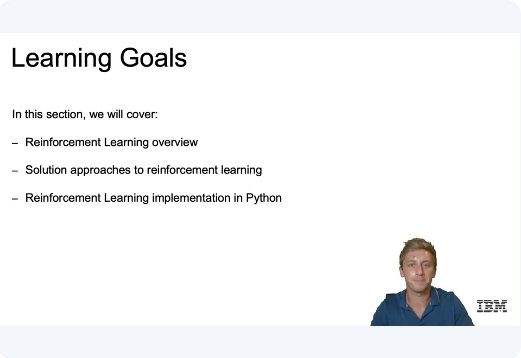
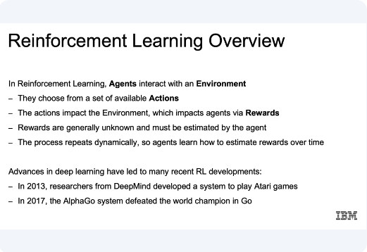
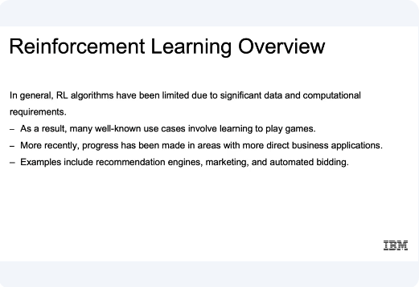
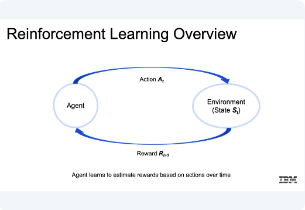
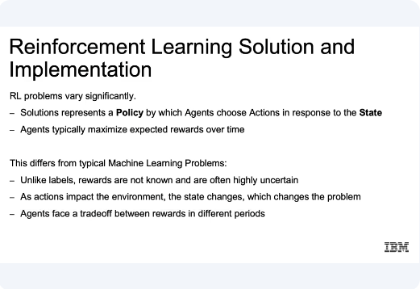
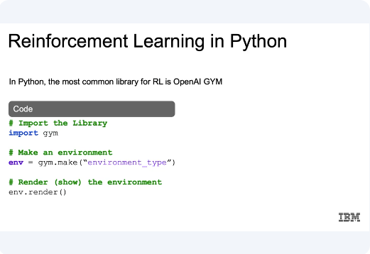
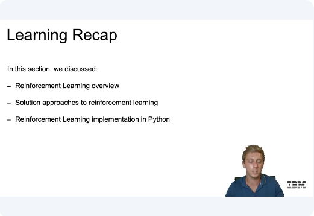

Reinforcement Learning

In this video, we'll provide a high-level introduction to reinforcement learning. Now let's go over the learning goals for this section. In this section, we're going to cover an overview of reinforcement learning at a very high level.
We'll have a discussion about the understanding of the approaches and implementation for reinforcement learning. Then finally we'll introduce reinforcement learning implementation using Python.

So let's start off with reinforcement learning overview as we promised. Now, in reinforcement learning, the idea is that agents will be interacting with an environment. And agents then are going to be the thing that ultimately takes the action. So if you think in regards to games, which are very popular for reinforcement learning, currently this would be the actual player. If we were thinking through a model that was meant to figure out, for example, where to place ads on a web page, the agent would just be that program that makes the decision where the ad will be placed. And the environment is going to be the world through which our agent moves. So if you're playing games such as chess, this would be the actual chess board for thinking something like ads on a web page, this would be the entire web page. And they choose from a set of available actions, and again using the game example, this would be all possible moves that an agent or a player can make in our game. In our ads example, this may be either adding an ad, removing an ad, or taking option of neither removing or adding an ad from the current page.
And the actions that we take are going to impact the environment, which in turn impacts the agents via rewards. So when an action is taken, we have impacted the environment where our agent exists. So if you think if we move a piece in our game, we have adjusted the environment of our game. If our move resulted in us getting more points or winning the game, this would be an example of a reward. And our system would learn that the actions taken were good actions. And similarly for ads example, our reward could be a result in increase clicks or increase in revenue. Now something to note is that rewards are generally unknown and must be estimated by the agent, so often times it will take many steps to reach towards that reward stage of your game. If that's just to win the game more to get to a certain place within the game. So I think for any game of any kind, oftentimes they'll take multiple moves before you get any type of reward.
And this process again repeats dynamically. So agents continuously learn how to estimate rewards overtime. Now, advances in deep learning have led to many recent reinforcement learning developments. For example in 2013 researchers from DeepMind developed the system to play Atari games and actually beat humans in Atari games. And in 2017 the AlphaGo system defeated the world champion in Go. So for the first time, the machines were able to beat a human champion in a complex game such as Go using reinforcement learning.

Now, in general, reinforcement learning algorithms have been limited due to significant data and computational requirements. So if you think about the infinite number of possibilities at every juncture, if you're adjusting for every person that visits your site, or even for games which is the example that has proven to be successful. But the reason why it's taken so long is that you think about something like Go or chess, the infinite amounts of moves that anyone can make along with the following moving reaction to those moves may lead to us needing a lot of data to train our reinforcement learning models. Now more recently, progress has been made in areas with more direct business applications. And examples include recommendation engines where recommending correctly could perhaps be a reward. Marketing with higher revenues or higher clicks, again, being that reward mechanism, and automated bidding. If you're able to optimize the amount spent or paid per an item, and setting up some reward system in that sense as well.

Now the idea here is that the agents again, if we think about reinforcement learning, the agent takes some action. That action affects the current environment, and then feedback from that environment is passed back to the agent in terms of a reward. So if it resulted in a positive result in relation to our reward system, the agent's actions are then reinforced. And then vice versa for negative results if it ended up in a bad state and the agent is reinforced not to take those same steps.

Now reinforcement learning problems will vary significantly. And solutions represent a policy by which agents choose actions in response to the current state, or in other words, since this is not directly supervised learning, what takes our input a\nd comes up with the resulting action as the policy, and that is what we ultimately try and optimize, whatever that policy is defined as. And agents typically work to maximize expected rewards over time.
And this differs from typical machine learning problems because unlike with labels, rewards are not known and often highly uncertain. We may not know at every juncture whether actions resulted in immediate rewards, or even if it did, if those intermediate rewards will lead to our larger goals of our network. Whereas with typical machine learning problems, the solutions remain static, with reinforcement learning as actions impact the environment, the state changes, which continuously changes the problem that we're working with. And then finally, agents face a trade-off between rewards in different periods, again, pointing to this uncertainty that revolves around this reward system.

Now just a quick introduction. We will get into Notebook, but in Python the most common library for reinforcement learning is going to be OpenAI GYM. So we're going to want to import our GYM library to create an environment. We call gym.make, and there are actually some environments that are going to be available to us according to the strings that we pass and we'll see this in the Notebook, so that we can specify the game or environments that world in which we are living. And then about render, now that we've created that environment object, will show the current state of our environment.

Now just to recap, in this section we discussed reinforcement learning overview with an understanding of that feedback loop, where the goal is for an agent to interact with the environment to choose from a set of available actions to increase possible rewards. And those rewards lead to reinforcement of those actions within the environment. And we discussed how solution approaches to reinforcement learning relied on the policy by which agents chose actions in response to the given state. And as those actions impact the environment, the state changes, which changes the problem we are currently working with. Then finally we closed out with a quick introduction to reinforcement learning implementation in Python, which we're going to go into further in our final notebook.